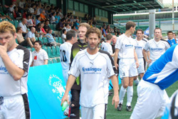
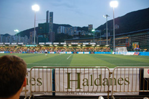
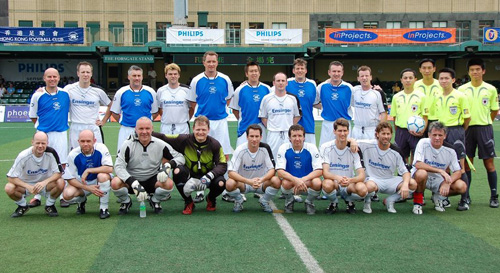

|
Hong Kong, 26th & 27th May,
5 TML members, 4 Swiss and 1 BFC player joined the veterans’ tournament at the Phillips Soccer Sevens, an international tournament that is played at the Hong Kong Football Club. The team also consisted of 1 player from the US, 1 from Spain (ex Penang), 1 from Bangkok (Cosmos FC), 1 from Malaysia (ex BFC), and one all the way from Scotland. We had a solid team made up of players with a lot of experience in these tournaments (3 being ex pros from Scottish & SE Asian leagues).
In our group, we beat the local Phillips side 2-0 on Friday night, then played the Southhampton veterans including Matt LeTissier and 3 other ex-pros and dismissed them 5-0 with some clinical finishing, the first one being set up by Leigh Manson from the BFC. The games are only 14 minutes long so 5 goals against a quality side is pretty hard to do. Our third match was against Bexton F.C. from the UK and we only needed a draw to win the group and that was achieved.
In the knockout round, we played a strong side with Gordon Cowens and one other player who had just finished a career with Manchester City. They were solid but we came away with a 1-0 win on a great goal by our French center forward, Davide, and some solid defending. That meant we progressed to the semi-final where we would meet the Phillips All-Star Team. Mark Walters, John Beresford, Warren Barton, Rob Lee, Coyle, Holdsworth were in the side with Paul Walsh (ex-European Cup winner with Liverpool) coming off the bench. It was as good as it gets, we held them 0-0 in the first half but their experience proved the difference and we gave up 2 goals in the 2H to miss out on the chance to play the German All-Stars in the final.
The final match was won by the Lorenz All-Stars 2-1. Their star player was ex-Urawa Red and World Cup Winner Uwe Bein as well some great ex-Bundesliege players. A great tournament but experience won out in the end.
Report by Cap'n Kirk

|